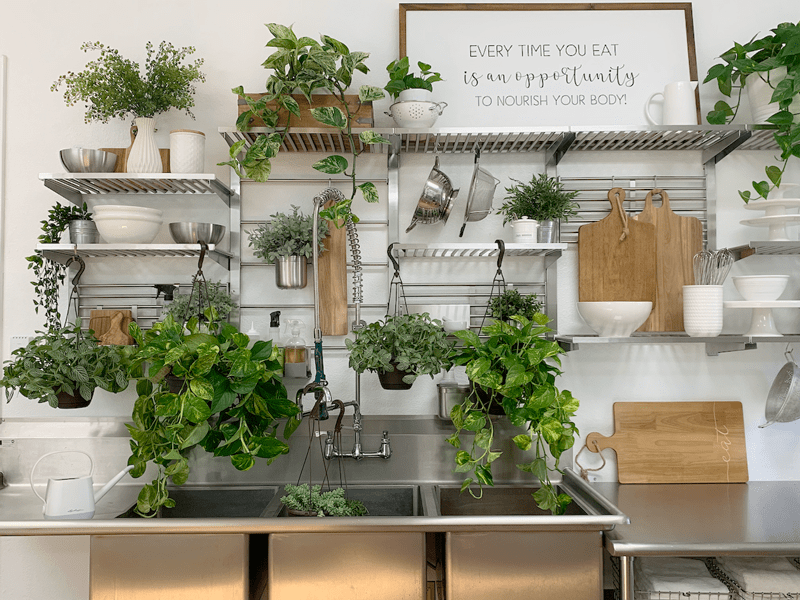

Caring for Houseplants | My Routine
The common houseplant is a great way to add life to your home with relatively little maintenance. BUT (isn’t there always a “but”?) you may be surprised to learn that grooming your houseplants can be one of the most time-consuming parts of caring for them, and with good reason. Proper grooming takes time and keeps plants healthy, which significantly enhances their appearance. So whether you already have one, two, fifty, or ZERO houseplants…what I am about to share is essential.
Plants Require Care
It’s true. They are alive and much like you, me or our pets…they require love, care, and nutrients (food, sunshine, water, cleaning, etc.). So, if your life is too full right now with other responsibilities, give this serious thought–your future plant deserves that. If you are new to growing and raising houseplants, before you buy one single plant, make sure your mindset is healthy. What I mean is that if you continue to keep telling yourself that you have a “black thumb” or that you’ve killed every plant you’ve ever owned, snatch those thoughts and flush them down the toilet. You will want to enter this new adventure with a positive outlook, because trust me: our words influence our outcomes.
The Benefits of Plant Care
Benefits for the plant:
- When you are cleaning houseplants leaves regularly, you are more likely to catch pests and signs of illness. Early detection makes treatment and the cure easier and more successful.
Benefits for the plant owner:
- Plants help purify the air, which is a healthy thing for us. Studies by NASA have found that plants can remove over 80 percent of volatile organic compounds (VOCs) every 24 hours.
- They can help improve our mood. One study found that active interaction with plants, and even with potting soil, can help to reduce daily stress. We can give thanks to tiny microbes, nicknamed “outdoorphins,” that are present in plants and soil that act as natural antidepressants. Outdoorphins! I love that! lol
- They can help our mental health. Spending time in a space with a lot of plants can have a therapeutic effect and lead to feelings of calm and reduced stress. Caring for houseplants has also been shown to help reduce feelings of loneliness and depression and instill a sense of accomplishment and purpose. Have you hugged your plant today?
- Adding houseplants to almost any room in your home can make the room appear bigger, warmer, and more inviting.
- I approach plant care as a form of active meditation. Connecting with nature is very calming for me–not only outdoors, but now also indoors. I choose to look at plant care as a positive part of my life, not as a chore.

Clean leaves help with photosynthesis.
- For plants to perform photosynthesis, they require light energy from the sun, water, and carbon dioxide.
- Water is absorbed from the soil into the cells of roots.
- The water passes from the root system to the xylem vessels in the stem until it reaches the leaves.
- Carbon dioxide is absorbed from the atmosphere through pores in the leaves called stomata.
- The leaves also contain chloroplasts that hold chlorophyll. The chlorophyll captures the sun’s energy.
- To do all this, plants need clean leaf surfaces!
Clean leaves are essential for the well-being of plants.
- Clean leaves help absorb foliar fertilizer more completely and efficiently.
- Foliar plant spray involves applying fertilizer directly to a plant’s leaves as opposed to putting it in the soil.
- Foliar feeding is similar to humans putting an aspirin under their tongue; the aspirin is more readily absorbed into the body than it would be if it were swallowed.
- A plant takes nutrients through the leaf much quicker than it does through the root and stem.
Clean leaves reduce pests.
- Finding pests before they become a problem is the best way to keep insects at bay.
- Pests tend to live on the top and underside of leaves, the crotch of the stems and leaves, and in the soil.
- By cleaning the leaves, you help to clear away webbing and possible pest eggs.
- Watch for honeydew–a shiny, sticky substance on the leaves made by aphids, mealybugs, and scale insects found on the upper surface of leaves, as well as on tabletops and other items around and under the plant.
- Dirty dishes sitting around attract flies; dusty plant leaves attract pests. You get the point.

How often do I need to clean my plants?
It depends on how much dust is in your air. If you live around dirt roads, construction, or have a lot of wind, you will need to clean your houseplants more often. The best way to tell if a plant needs cleaning is to rub your fingers on the leaves. If you can feel or see dust more dust than you can blow off the leaves, it’s time to clean. I always check mine as I water them.

This plant was relatively clean plant to the naked eye… as you can see, there was a lot of dust on the leaves, which slows down growth as the dust blocks photosynthesis.
How to clean your plants
Over a period of time, indoor plants will accumulate dust. If your collection of antique milk jars collect dust, why wouldn’t your plant leaves? Keeping the pot, soil, and leaves of your plants free of dust and contaminants makes them not only look more attractive (healthy), it helps with pest control. Thoroughly examine all plant parts and containers every time you water the plant. I recommend a magnifying lens, as some pests are tiny. A ten-power hand magnifying lens is helpful when looking for pests. There are also magnifier apps for smartphones.
Be aware of cross-contamination
To avoid cross-contamination, be sure to make the following suggestions HABITS.
- Use a clean rag/towel for each plant.
- Clean any tools you use during the care of the plants: watering probe, scissors, pruners, etc. I spray them with rubbing alcohol.
- If you decide to repot a plant, make sure that the pot and soil are clean.
- Do not use a duster of any sort; this can lead to cross-contamination.

Tools I Use for Plant Care
Magnifiers
- I use (these) because they are hands-free, which allows me to work on the plant with two hands, and they also belong(ED) to my husband, so they were free. haha
- Pests can be challenging to the naked eye!
Paper towels or lint-free rags
- If you use washable cloths, make sure they are lint-free. Leaving small white puffs of fabric can fool your eye into thinking that they are mealybugs (that can’t be good for the adrenals, haha). It is best to use a fresh rag per plant, so you don’t transfer pests or their eggs.
- If that’s not feasible, then paper towels may be a better option.
Rubbing alcohol solution
- I always have a spray bottle of this on hand to help kill and control pests and eggs. The alcohol solution may burn sensitive plants, so try this on a small area of the plant first. Using this solution is an easy way to control a light infestation of aphids, mealybugs, crawlers (scale insects), and mites. If using this method, it should be repeated several times.
- Solution – 1-1 ratio of rubbing alcohol and water.
- Be sure to label the bottle!
Neem oil solution
- Neem oil is a natural byproduct of the neem tree. The oil is harvested from the seeds and leaves. It is a safe, effective insecticide that kills insects at all stages of development — adult, larvae, and egg. It also helps to prevent or even kill fungus on your plants.
- I keep a large spray bottle ready. I upgraded to a container that holds more solution and is easier on my hands. ALL my plants get this treatment upon arrival and throughout time as preventative care… so I go through quite a bit. I use one like (this bottle). I bought mine at Lowe’s for $5.99, so feel free to shop locally (actually, I prefer buying local!)
- Solution: 1-quart water, 1.5 tsp neem oil, 1/2 tsp mild dish soap (Dr. Bronner’s is what I use). The soap helps the oil to emulsify in water and also suffocates the pests.
- Be sure to label the bottle!
Spray bottle of plain water
- I use this for basic cleaning when the other two solutions are not required.
- Be sure to label the bottle! Plain water looks like the alcohol solution, so the obvious isn’t so obvious here.
 My routine for cleaning my plants.
My routine for cleaning my plants.
- Bring the plant to a well-lit area.
- Thoroughly check the plant for pests: top of leaves, underneath the leaves, the crotch where the leaves attach to the stems, the stems at the base of the plant, the soil, and the plant pot itself.
- If the plant is free from pests, I use plain water and a rag to clean the leaves.
- I spritz the leaves with water and dry each one with the cloth. I prefer not to use any leaf-shine products, since a lot of them clog the pores of the leaves.
- Check to see if the plant needs watering.
- Look for any possible signs of issues, the health of the leaves and roots.
- Clean any dried and dead debris from the base of the plant. Dead leaves attract issues.
- Remove any dying or diseased leaves.
- If it gets a clean bill of health, return it to its home.
My routine should I find pests.
- If you spot a pest, know that where there is one, there is more, so it’s appropriate to give the plant a treatment.
- Take the plant to the sink, tub, or outside, and spray the plant down with lukewarm water. Spraying plants with a forceful stream of water can be effective in removing and drowning insects such as aphids, mealybugs, crawlers (scale insects), and spider mites. Focusing the stream of water on the undersides of leaves where most insect pests are found is essential. If the soil is already wet, wrap plastic wrap around the base of the plant to avoid overwatering the plant during the process.
- Next, I spray the plant with an alcohol solution. Be sure to spray the top of the soil and the potting container as well. Bugs like to hide. If you suspect an infestation, water the plant (if needed) then pour 1 cup of the alcohol solution into the soil. Don’t just dump it in one spot; water the complete top of the soil. The alcohol will help kill the eggs/larvae, and it also aerates the soil, which brings oxygen to the roots.
- Spray it with the neem oil solution. I saturate it, so it’s best to do this either outside (weather permitting) or in the tub/shower. Be sure to soak the top of the soil too.
- Isolate the plant, so the pests don’t spread.
- When applied as a preventative, neem oil should be applied every 7 to 14 days. To control a pest or disease already present, a 7-day application is recommended.
- Plant trimming: If a pest infestation is severe, the injured parts of the plants can be removed to permit regrowth and recovery. This method works best when followed by repeated washing or pest control.
- Plant disposal: If the plant is heavily infested with a pest, disposing of it may be the best solution. It will be a sad day, but one must view the quality of life and move on.
I hope you found all of this to be helpful. There is so much to learn when it comes to plant care. My routine may differ from yours, and that’s okay. Please leave a comment below and have a blessed day, amie sue
© AmieSue.com